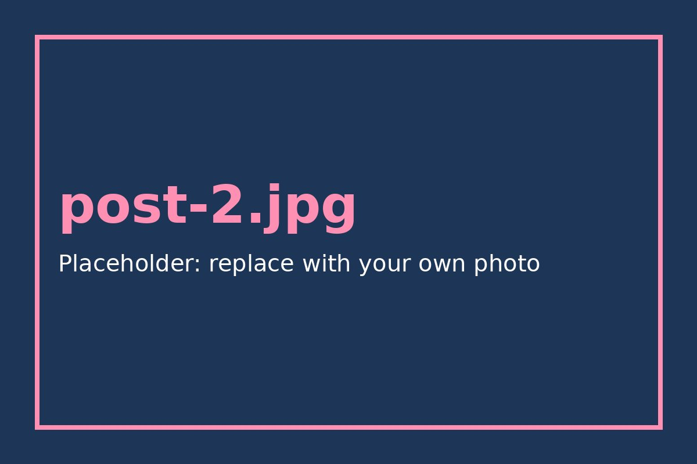

Home / Guides
7 Things to Check Before Buying a Secondhand Jacket
A good jacket can last a decade, but a bad one is only cheap on the day you buy it. Run through these seven checks before you pay.

The checklist
1. Zip. Open and close it fully. A sticky or splitting zip is costly to replace.
2. Lining. Put your hand inside and feel for rips, stains or a lining that has come loose.
3. Seams. Pull gently at the shoulder and armpit seams. Visible gaps mean they will tear soon.
4. Collar and cuffs. These wear first. Light fraying is fine, but shiny or thin fabric is not.
5. Smell. Dust and detergent smell can be washed out. Heavy smoke or mildew often cannot.
6. Buttons and pockets. Look for missing buttons and holes in the pocket corners.
7. Fit. Wear a hoodie or sweater underneath when you try it on, then raise your arms. If it pulls across the back, leave it.
When to walk away
Small fixes like a missing button or a loose hem are easy. Walk away from broken zips, torn lining on leather and strong mildew.